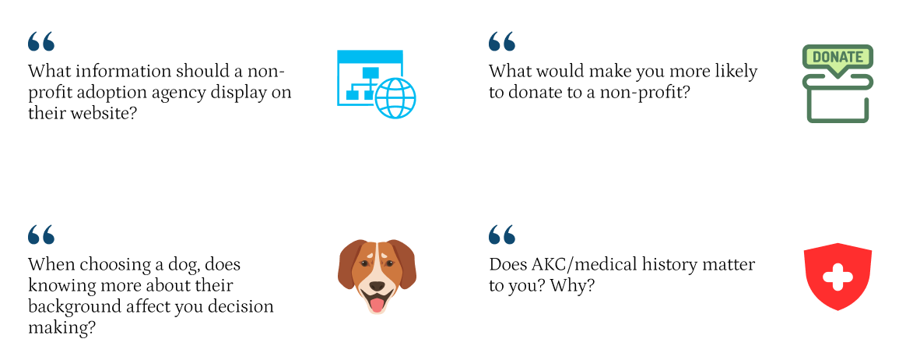

The main objective of recreating the existing Tampa Bay Beagle Rescue website was to showcase and improve their adoption process. The purpose of the non-profit is to rescue and find homes for neglected or abused beagles within the Tampa area.
Dylan Ramos
Bryan Reveron
Luis Durate
November 23, 2022-
December 14, 2022
3 Weeks
Interviews & Surverys
During our user research phase, we conducted nine interviews. Through these interviews, we asked what would each person look for in an animal adoption agency before adopting a new member of their family, some of these questions were:
Through the interviews that we conducted we noticed there were some reoccurring topics being brought up by the interviewees being,
Thanks to this data we were able to take this into account and incorporate these important features into our design. Also this gave us a better understanding of who our user base will be by creating a user persona.


After finalizing the user persona, we created a user journey to envision how this user would go about adopting a beagle from the non-profit.

I then selected three competitors and documented their strengths and weaknesses. This aids us in developing new ideas to stand out from the competition.
What are we trying to solve?
Users are able to adopt beagles from the TBBR website. However, the process of adoption is not clear and their is only one way to do so in a poorly made call to action. Also, their page is not consistent in its organization and the navigation is not responsive.
Well, we defined our problem statement and created a user flow. With the adoption being the end goal, I knew we had to improve the adoption process.
Once our redesign is completed, the user should be able to confidently and efficiently adopt a beagle from the Tampa Bay Beagle Rescue.

Final Prototype
Below you can view the final desktop adoption process we’ve created for the Tampa Bay Beagle Rescue’s website.